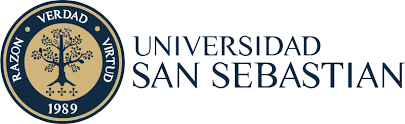
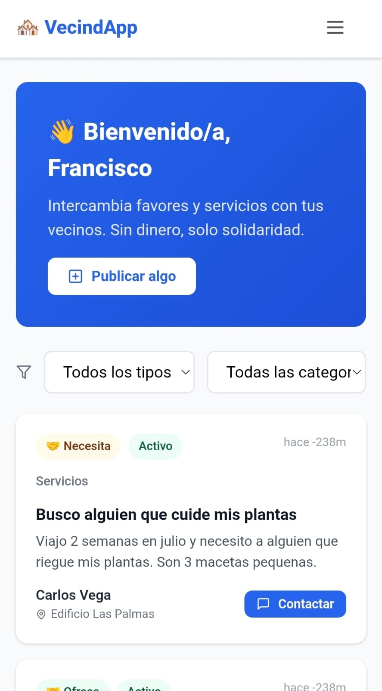
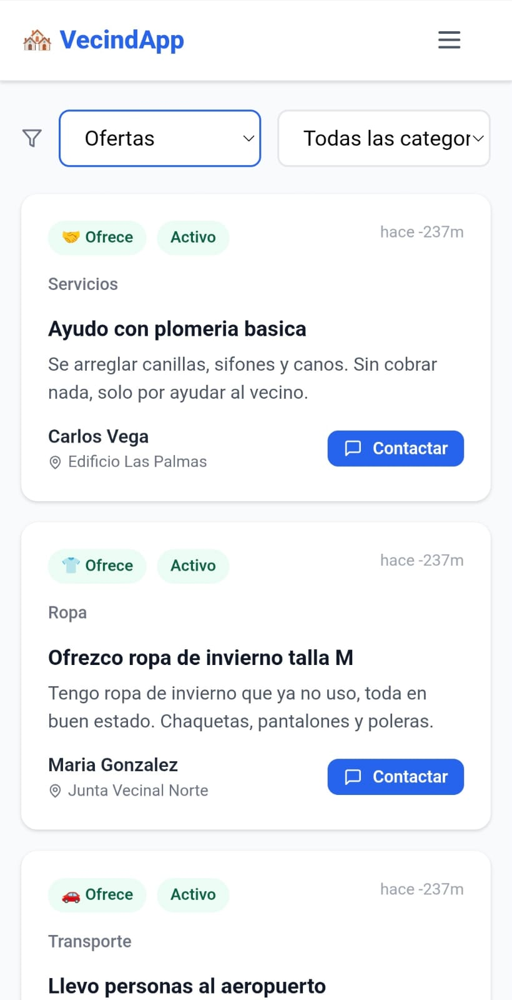
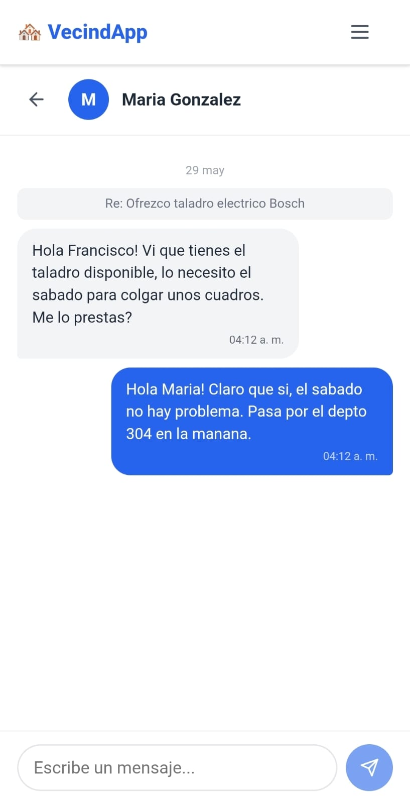
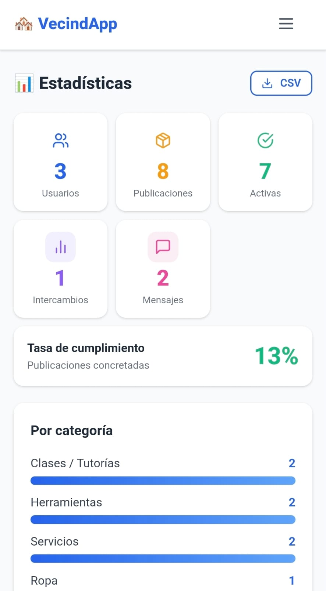

Fortalecimiento del Capital Social Comunitario Mediante el Uso de Tecnología Ética
Moisés Vásquez · Valentina Hernández · Benjamín Maldonado · Francisco Nomán · Sebastián Valbuena

El presente trabajo expone el desarrollo de VecindApp, una plataforma digital comunitaria diseñada para facilitar el intercambio solidario de favores, servicios y artículos en desuso entre vecinos, prescindiendo explícitamente de toda intermediación monetaria o créditos. Ante la creciente fragmentación del tejido urbano y la mercantilización de los vínculos cotidianos, la herramienta ofrece un espacio intuitivo de publicación de ofertas y solicitudes de asistencia directa. La iniciativa se fundamenta en la antropología política aristotélica que concibe al ser humano como un ser social por naturaleza. Se implementó un Producto Mínimo Viable (MVP) en una comunidad piloto real, cuyos resultados operativos evidencian la factibilidad técnica y social de la propuesta, validando que la tecnología puede actuar como un catalizador eficiente del bien común cuando se estructura desde la ética.
El debilitamiento de los lazos comunitarios en los entornos urbanos constituye un fenómeno ampliamente documentado. La creciente individualización y las dinámicas puramente mercantiles erosionan la Philia cívica —amistad civil—, concepto que Aristóteles consideraba condición esencial para la existencia de la sociedad.
Investigación-acción participativa aplicada en comunidad piloto real (Edificio Las Palmas / Junta Vecinal Norte):
Entrevistas e informe de necesidades de 50 vecinos.
Wireframes de interfaz y requisitos técnicos.
Codificación del MVP en GitHub.
Taller presencial y capacitación in situ.
Métricas y evaluación de impacto.

Bienvenida y menú
Feed de publicaciones
Chat vecino a vecino
Panel: 3 usuarios, 13%VecindApp demuestra que la tecnología, orientada por principios éticos sólidos, puede fortalecer el capital social y la cohesión comunitaria local. El MVP operativo validó que los vecinos, contando con herramientas digitales accesibles, están dispuestos a relacionarse solidariamente sin transacciones comerciales de por medio. La prohibición absoluta del dinero demostró ser la variable de diseño clave para forzar la reciprocidad y rescatar la dimensión de la Philia aristotélica.